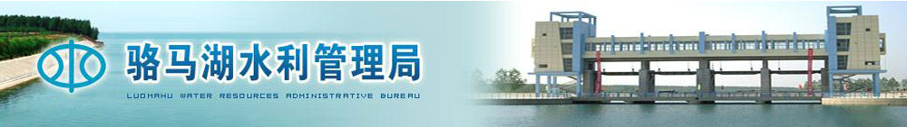

欢迎进入江苏省宿迁市水务局网站！
-请输入关键字-

网站首页
组织机构
水利要闻
水务信息
政策法规
政务公开
视频图片
信访通道
实时水情
项目动态
咨询解答
政务公开
ACHIEVEMENTS
水利政策
宪法相关内容
刑法相关内容
资源保护法相关内容
政务公开
骆马湖水利局财政公示
政府水利政策解析
行政审批项目公开
联系我们
CONTACT
地址：江苏省宿迁市骆马湖水利局
电话：0371-68576345 0371-32378475
邮箱：482947589@jdk.com
投资：0371-64276277
当前位置：
首页-
政务公开-
骆马湖详解
友情
链接
中国水势
中国水利学会
中国水文化
水资源论证网
中国水土保持监测网
中国水土保持生态建设网
陇南市龙门供水工程建设管理局
陇南市人民政府网
陇南市新闻网
陇南市廉政网